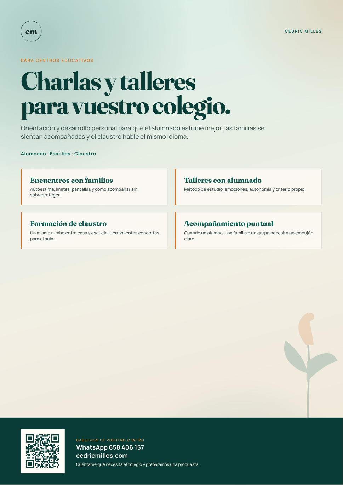
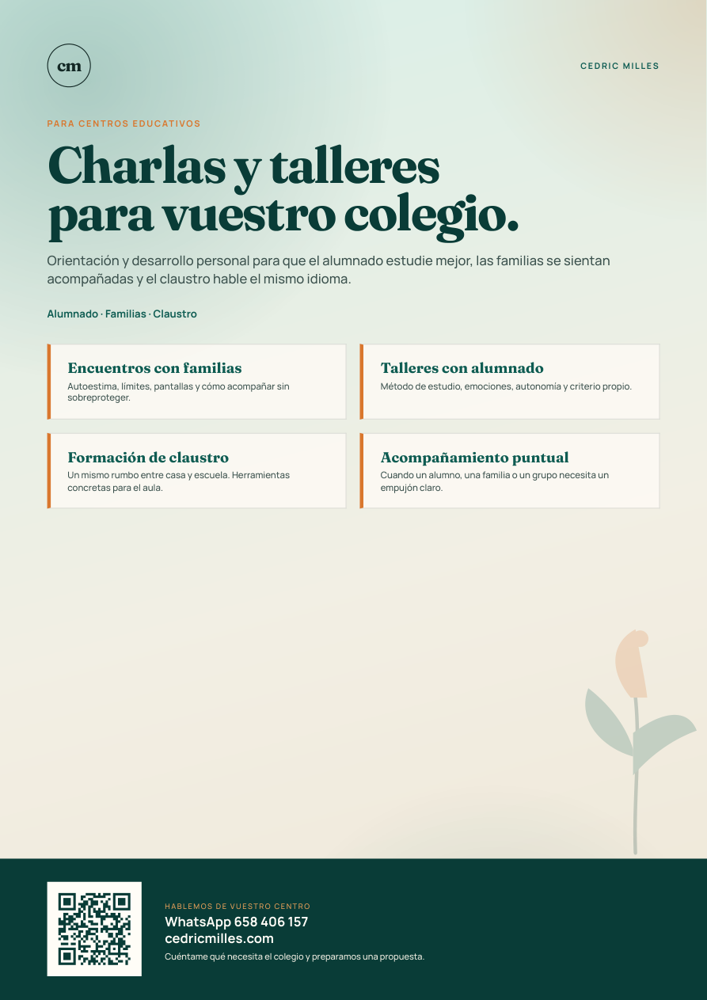
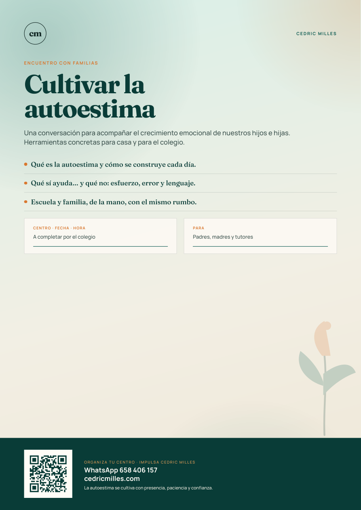
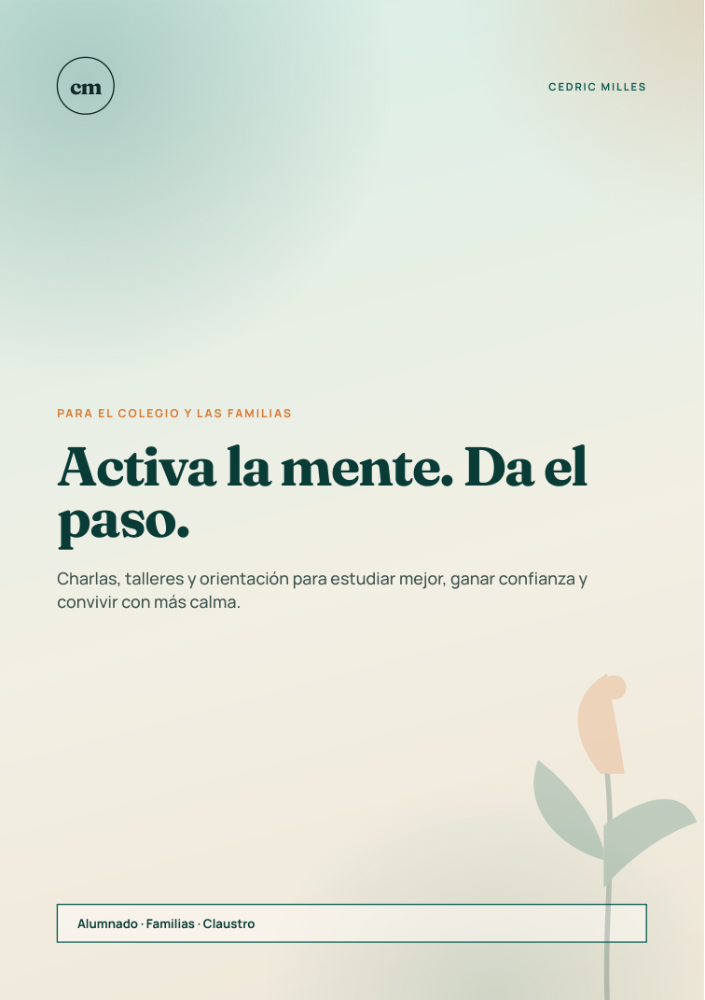
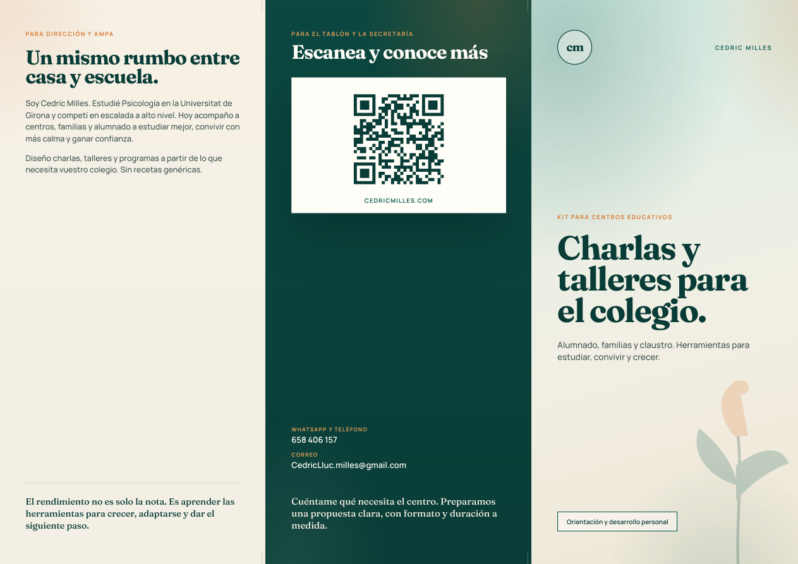
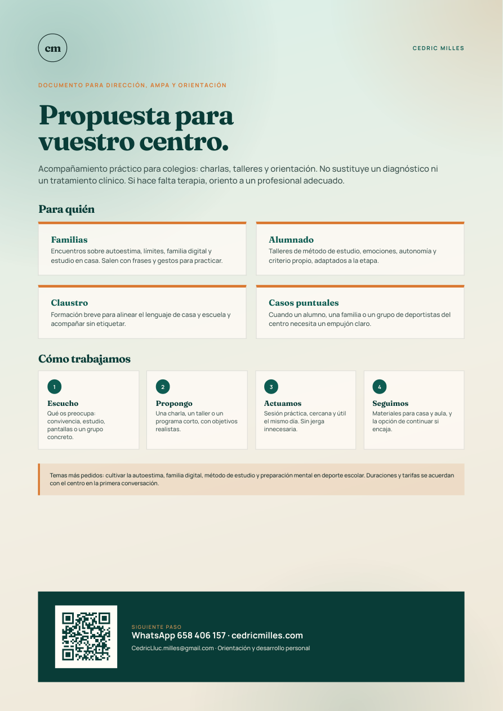

Cartel A3
Para el tablón del hall o la sala de profesores. Oferta clara y QR grande.
Descargar A3Cedric Milles · Orientación y desarrollo personal
Carteles, trípticos, flyers, tarjetas y una propuesta para dirección. Misma paleta que la presentación. Pensado para dejar en secretaría, el hall, el claustro y la AMPA.

Para el tablón del hall o la sala de profesores. Oferta clara y QR grande.
Descargar A3
El mismo cartel, listo para la fotocopiadora del centro.
Descargar A4
Para anunciar la charla de autoestima. El colegio completa fecha y hora.
Descargar cartel charla
Dos caras. Para la conserjería, la bolsa de la AMPA o la reunión de padres.
Descargar flyer
Específico para centros: formatos, temas y cómo contratar una sesión.
Descargar tríptico colegios
85 × 55 mm. Para dar en mano a dirección, tutores y familias.
Descargar tarjeta
Una hoja para dejar en jefatura, orientación o la AMPA. Explica el servicio y el siguiente paso.
Descargar propuesta
La presentación de marca para quien quiera conocerte más allá del colegio.
Ver tríptico general